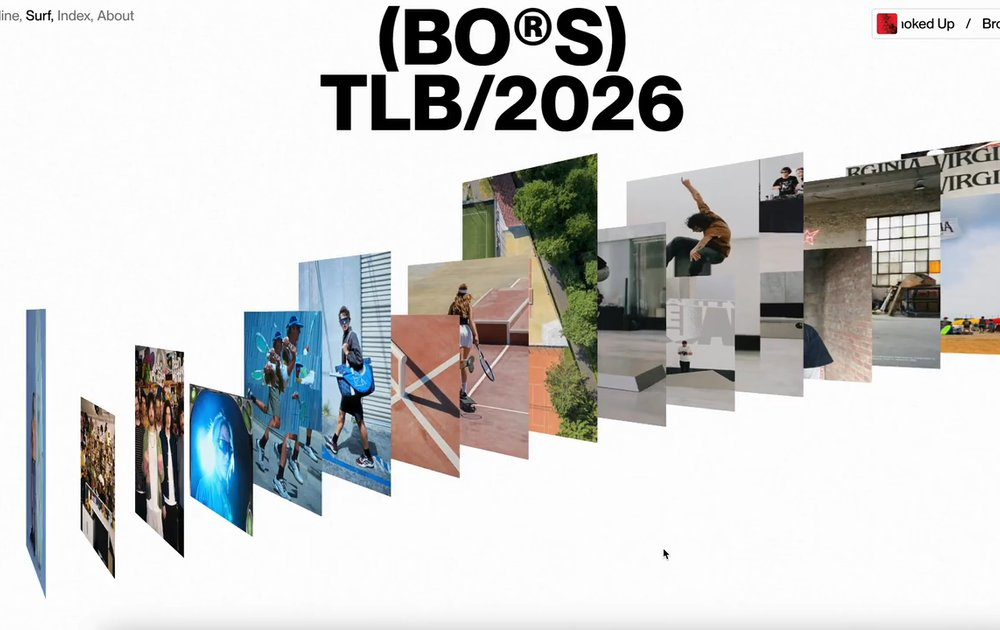
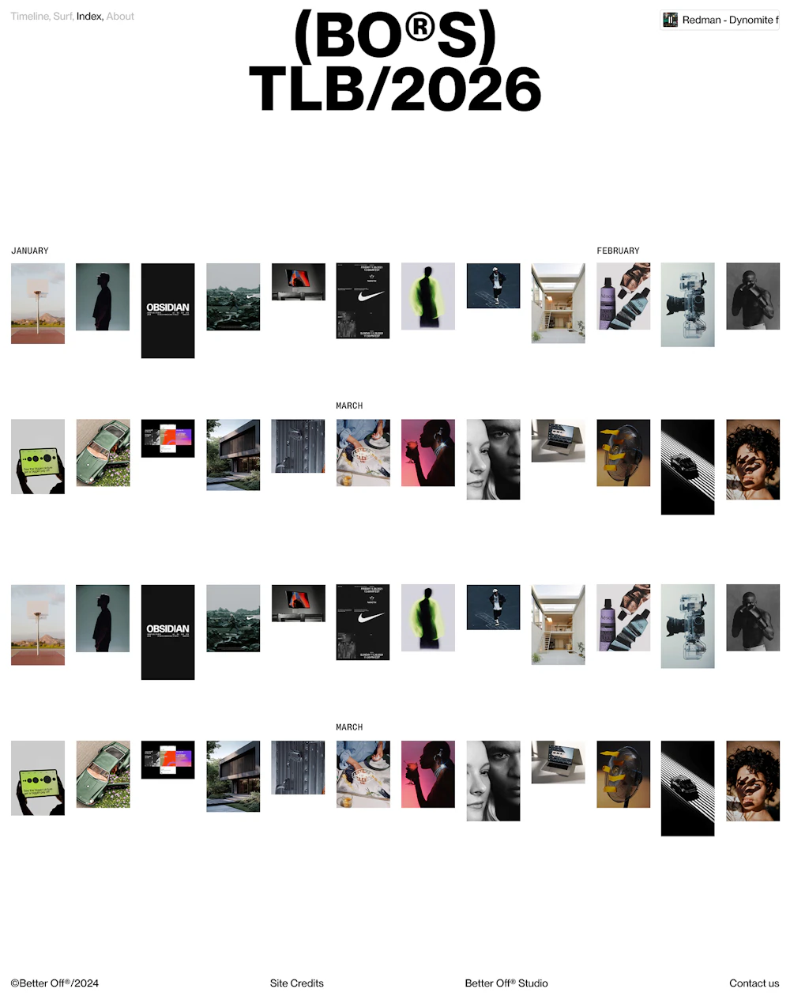
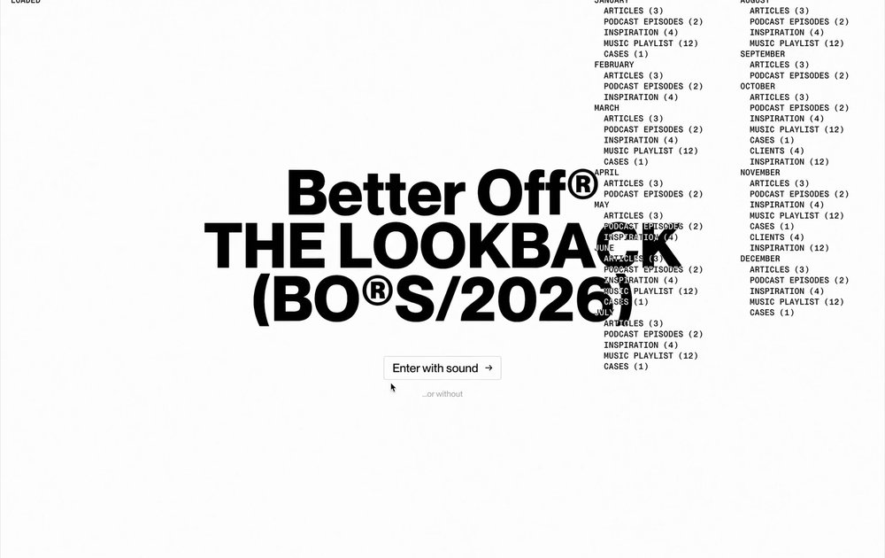
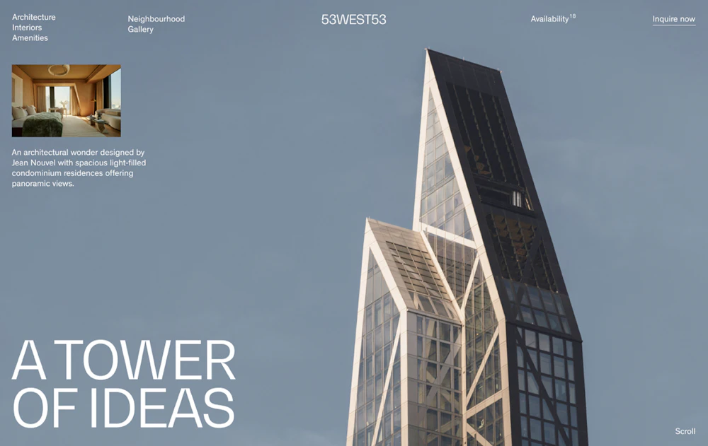
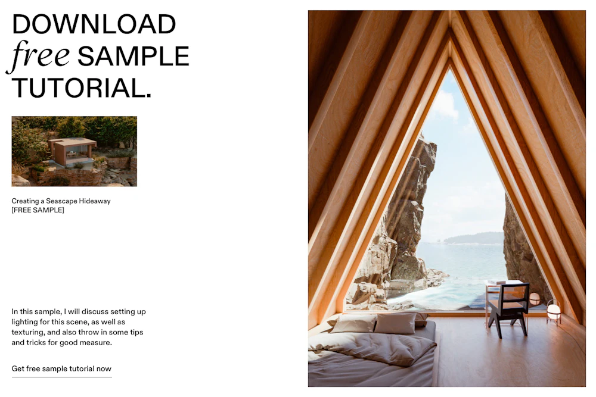
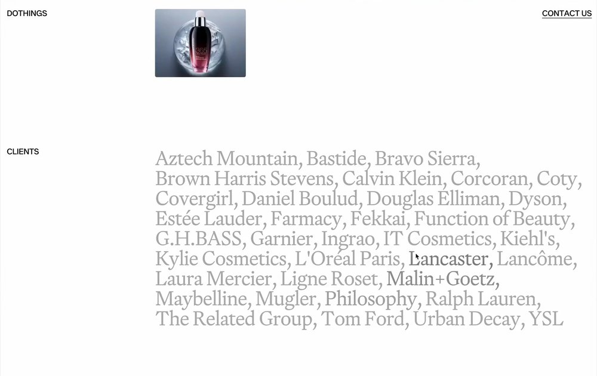
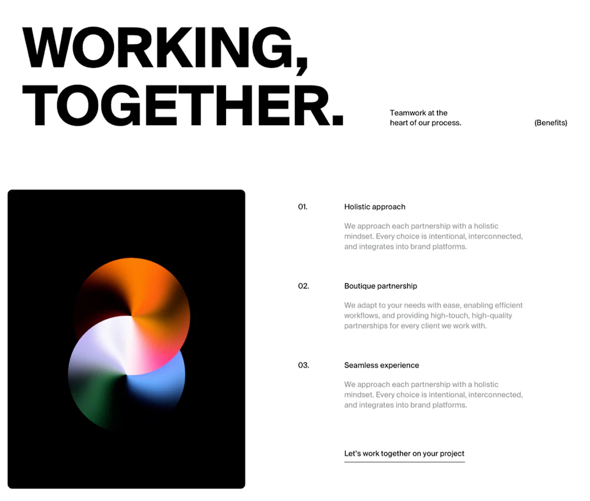

lineReveal — mode: immediate
page chrome — smoothScroll · preloader · navHide · menuOverlay
Animations,
extracted and
made reusable.
cursorFollower — spring follower over the showreel zone
Hover me
underlineLink — sweep underline on hover
inkWipe — brush page transition: cover → swap → unveil, one continuous stroke
Page A
logoReveal — staggered SVG paths
heroShrink — media scales down as it scrolls away
maskReveal + revealRule
Text that rises into view.
counter — 0→240, on-scroll, padded, scroll progress
0
counter() — 0 → 240
0
counter() onScroll
0
counter() padded
0%
counter() scroll progress
lineReveal — mode: scroll (reverses on leave)
Every line of this paragraph is split into an overflow-hidden mask and
slid up from below with a 0.1s stagger on a power4.out curve. Scroll
away and it reverses, exactly like the original. It works on long
copy, short copy, and headings with
hard breaks in them.
scrambleText — decode reveal · rollText — rolling words · lineReveal split:"chars"
Characters churn through the alphabet before they land on the final line.
We build brandswebsitesmotion
Per-character masked rise.
flipWords — words glide between two layouts (FLIP, scroll-scrubbed)
Make
it
move.
marquee — two rows, opposite directions, 40px/s
horizontalScroll — pinned track + containerAnimation parallax
parallax — data-speed
unfoldReveal + clipWipe + mediaSettle — enter reveals, reverse on leave-back · replay on re-enter
Grows open from the top edge — scaleY from 0, staggered with its sibling below.
Second block unfolds too — one trigger, one staggered tween.
Unfolds horizontally from the left.
stackedCards — pinned deck with cascading stagger
Services.
stackedCardsPinned — sibling viewport, pinned with pinSpacing:false
Also pinned.
scatterText — pinned band with per-char settle
So, are you ready to Stand out?
dragStrip — infinite drag with rotation on pull
audioBars + themeReveal + liquidButton
Micro interactions.
magnetic — buttons pull toward the pointer, elastic snap back
reelText — per-character odometer roll, a scroll-triggered slot-machine decode
Every character rolls into place.
dragRail — bounded drag rail: inertia throw, tanh rubber-band ends, wheel input · glRail — the same physics drawn as a WebGL overlay: cards bent around a cylinder, perspective grid floor (three.js)






webglMedia — three.js shader cards: SDF corners, hover dent + chroma split (WebGL)
tearReveal — torn-edge sheet sweep: fbm shards + barrel bow, scrubbed by your scroll (WebGL)
Half-torn is a place
Scroll — the boundary follows you, forwards and back. Detached shards ride ahead of the front, a barrel warp bows the edge into an arriving curve.
ditherReveal — the photo punches through its plate in a speckled ring (WebGL)